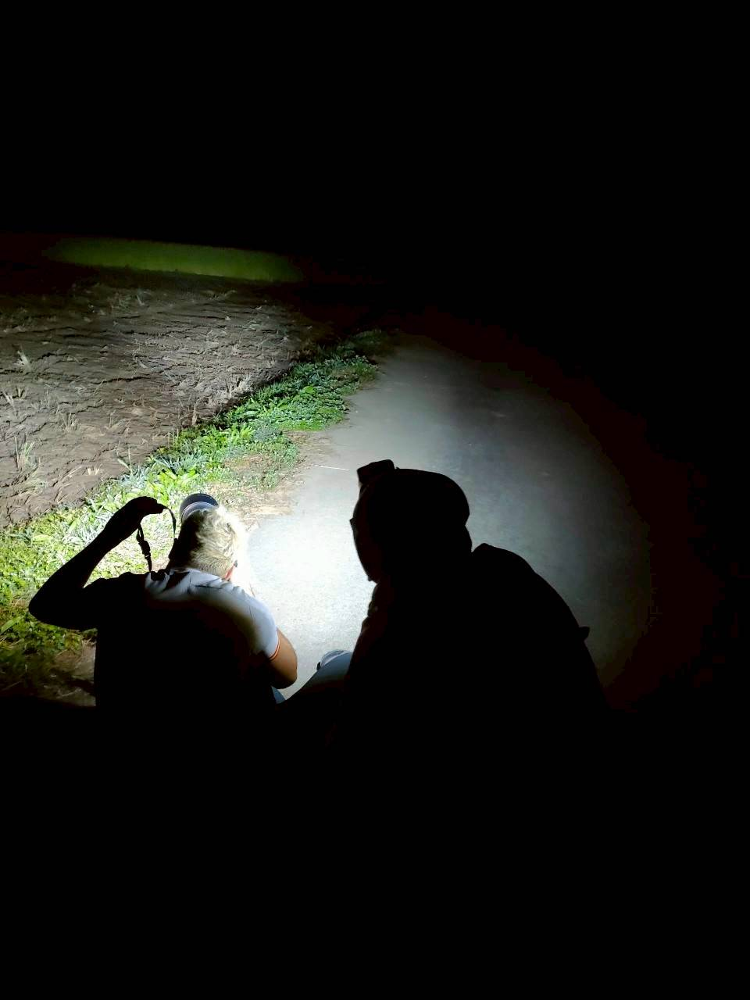

代表社員 / 共同創業者
辰巳 海斗
Kaito Tatsumi
事業運営とお客様との窓口を担当。導入や評価利用の相談を通じて、現場で求められる機能や運用上の課題を製品づくりにつなげています。
People
現場の声を受け止めることと、道具として実装すること。その両方を大切に、製品を育てています。
代表社員 / 共同創業者
Kaito Tatsumi
事業運営とお客様との窓口を担当。導入や評価利用の相談を通じて、現場で求められる機能や運用上の課題を製品づくりにつなげています。
共同創業者 / WildCatcher開発者
ディエゴ・アロンソ
WildCatcherの設計・開発に取り組むソフトウェア開発者。画像・動画解析と、結果の確認・修正を含む現場のワークフローを形にしています。

From the field
画像が何枚あるかだけでなく、誰が、どのように確認し、次の仕事につなげるのか。WildCatcherは、その流れに向き合うところから生まれました。
環境アセスメント支援ツールWildpassでも、記録する人と確認する人が同じ根拠をたどれる仕事の進め方を目指しています。
製品・サービスを見る